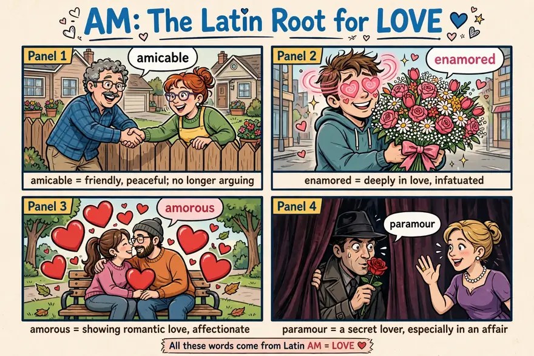
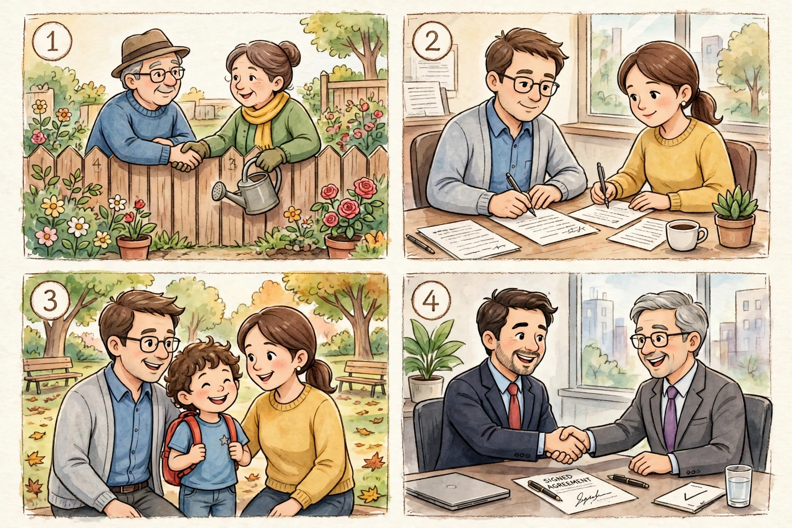
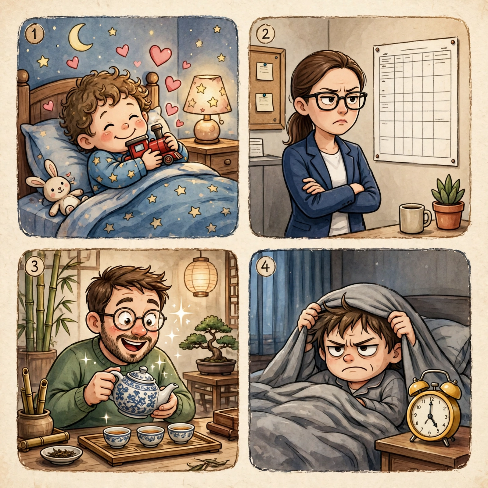
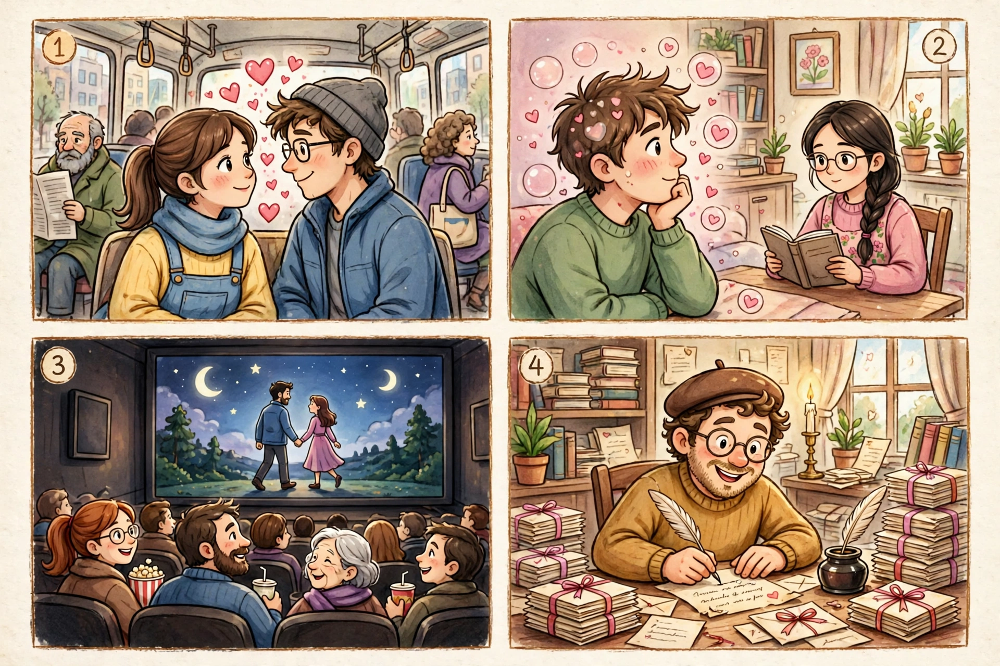
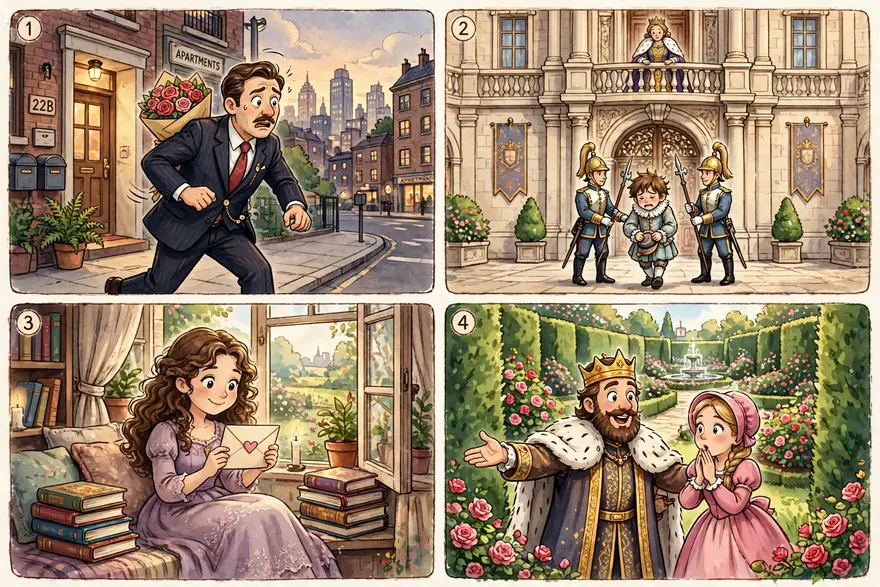
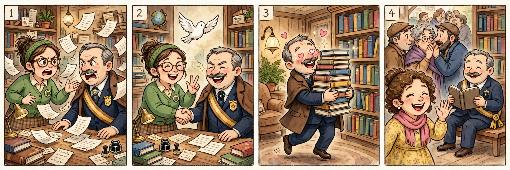

点开单元看词根；带链接的是已上线词根，其余陆续制作中。
词汇课首页 › Unit 1 › AM
🔊 词根发音：/æm/（源自拉丁语 amare /ɑːˈmɑːreɪ/，「去爱」）
A famous couple announced their amicable divorce on Monday, and fans were quickly enamored with their polite statement — no fights, no blame, just two grown-ups being nice. Then the tabloids arrived: old photos showed the husband casting amorous glances at a young actress, and one paper even called her his paramour. The actress replied within an hour: “He is my uncle.” The internet laughed for a whole day.
本则为自创热点段子：词是真的，事是编的——amicable、enamored、amorous、paramour 四个词一个不少，全在里面。
AM comes from the Latin amare, “to love.” The Roman god of love was known by two different names, Cupid and Amor. Amiable means “friendly or good-natured,” and amigo is Spanish for “friend.”
AM 一家都跟「爱」有关，但火候完全不同：amicable 是没火花的友善，enamored 是被迷住，amorous 是火花四溅，paramour 是见不得光的那种爱。今天用一张四格漫画把四种火候一次分清。

Friendly, peaceful.
• Their relations with their in-laws were generally amicable, despite some bickering during the holidays.
Amicable often describes relations between two groups, or especially two nations—for example, the United States and Canada, which are proud of sharing the longest unguarded border in the world. So we often speak of an amicable meeting or an amicable settlement. When amicable describes more personal relations, it may indicate a rather formal friendliness. But it's always nice when two friends who've been quarreling manage to have an amicable conversation and to say amicable good-byes at the end.
友好的；和平（解决）的。
例句：他们和亲家之间的关系总体上很友好，尽管节假日里偶有拌嘴。
amicable 常用来形容两个群体、尤其是两个国家之间的关系——比如美国和加拿大，两国以拥有世界上最长的不设防边界而自豪。所以我们常说 amicable meeting（友好会面）或 amicable settlement（友好和解）。当 amicable 形容更私人的关系时，它可能指一种略显正式的友好。不过，两个吵了架的朋友最后能友好地谈上一次话、再友好地道别，总是件好事。
—— 下面是我的讲解 ——
🧠 记忆妙招：AM（爱）的一家亲戚，但火候最淡：不是相爱，是「不撕破脸，还能好好说话」。名场面是离婚夫妻在民政局门口握手合影、配文「好聚好散」——全网夸的那种体面分手，就是 amicable。记住：带 am 的词都有温度，amicable 的温度是「友善的微笑」，不是「火热的心」。
💡 场合与语境：离婚报道、商业纠纷和解、邻里矛盾调解、两国关系，都是它的主场；an amicable settlement（友好和解）是法律新闻的固定搭配。
🔁 高级替换：friendly 太日常，正式写作里「和平解决」就用 amicable。
⚠️ 注意：它强调「没闹翻」，不等于亲密无间，所以夸真恩爱的夫妻别用它（那是 loving）；副词 amicably 很常用，如 They divorced amicably.（他们和平分手。）
写作：纠纷、谈判类作文替换 friendly，立刻专业。
✏️ 拼写：a-mi-ca-ble，只有一个 m，别受 amiable（和蔼可亲，拼法不同）干扰。
例句：

图片四格与下面 ①②③④ 四个例句一一对应。
① After a long talk, my neighbour and I found an amicable solution to the noise problem.
长谈之后，我和邻居友好地解决了噪音问题。
② They reached an amicable divorce, with no fights over money.
他们和平离婚，没有为钱争吵。
③ They reached an amicable agreement about the children.
他们就孩子的问题达成了友好的协议。
④ The two companies settled the dispute in an amicable way.
两家公司以友好的方式解决了纠纷。
Charmed or fascinated; inflamed with love.
• Rebecca quickly became enamored of the town’s rustic surroundings, its slow pace, and its eccentric characters.
Computer hackers are always enamored of their new programs and games. Millions of readers have found themselves enamored with Jane Austen's novels. And Romeo and Juliet were, of course, utterly enamored of each other. But we also often use the word in negative contexts: A friend at work may complain that she's not enamored of the new boss, and when you start talking about how you're not enamored with the neighbors it may be time to move. (Note that both of and with are commonly used after enamored.)
被迷住的；倾心的；热恋的。
例句：丽贝卡很快就迷上了这个小镇的田园风光、慢节奏，还有镇上那些古怪的人。
电脑黑客们总是 enamored of（迷恋）他们的新程序和新游戏。数百万读者发现自己 enamored with 简·奥斯汀的小说。罗密欧与朱丽叶当然是深深地 enamored of 对方。但这个词也常用在否定语境里：同事朋友可能抱怨她 not enamored of 新老板；而当你开始说自己 not enamored with 邻居的时候，也许就该搬家了。（注意：enamored 后面 of 和 with 都常用。）
—— 下面是我的讲解 ——
🧠 记忆妙招：en-（进入）+ amor（爱）= 「一头栽进爱里」。而且栽进去的不只是爱情：新玩具、新手机、新城市，都能让人栽进去。画面：你家娃抱着新买的玩具睡觉，谁碰跟谁急——那股劲儿就是 enamored。再想想你自己刷到一款新手机走不动路的样子，一模一样。
💡 场合与语境：书面语和新闻里表达「迷上、着迷」，后面跟 of 或 with 都行。
🔁 高级替换：be crazy about 太口语，写作里换成 be enamored with 立刻文雅；它的否定式 not enamored of 更是高级吐槽句式，比 I don't like 有文化得多，比如 I'm not enamored of the new plan.（我对新计划并不感冒。）
⚠️ 注意：美式拼写 enamored，英式 enamoured 多一个 u；这个词带「热恋期滤镜」的味道，暗示未必长久。
写作：替换 obsessed with，但语气是正面的着迷，不带病态。
✏️ 拼写：e-na-mored；美式拼法 enamored，英式 enamoured 多一个 u，本书用美式。
例句：

图片四格与下面 ①②③④ 四个例句一一对应。
① My child is completely enamored of the little toy train.
我家娃彻底迷上了那列小玩具火车。
② Honestly, I am not enamored of the new timetable.
说实话，我对新课表并不感冒。
③ He became enamored of Chinese tea culture.
他迷上了中国茶文化。
④ I am not enamored of the idea of getting up at five.
我一点也不喜欢五点起床这个主意。
Having or showing strong feelings of attraction or love.
• It turned out that the amorous Congressman had gotten his girlfriend a good job and was paying for her apartment.
A couple smooching on a park bench could be called amorous, or a young married couple who are always hugging and kissing. But the word is often used a bit sarcastically, as when a tabloid newspaper gets hold of some scandalous photos and calls the participants “the amorous pair.” In such cases, we may be encouraged to think the attraction is more physical than emotional.
含情的；示爱的；恋爱的。
例句：原来那位风流议员给他的女朋友安排了一份好工作，还替她付着公寓的租金。
一对在公园长椅上亲热的情侣可以称作 amorous，一对总是又抱又亲的年轻已婚夫妇也可以。但这个词常带一点讽刺意味，比如小报拿到了某些不光彩的照片，把当事人称作“the amorous pair（那对恩爱鸳鸯）”。这种情况下，我们多半会觉得，这份吸引更多是身体上的，而不是情感上的。
—— 下面是我的讲解 ——
🧠 记忆妙招：AM 一家里火力最猛的一个：眼神拉丝、含情脉脉。画面：偶像剧男女主一对视，背景自动冒粉红泡泡、响起慢镜头音乐——amorous 就是那层泡泡。跟 amicable 对比着记：amicable 是握手，amorous 是拥抱，火候一眼分清。
💡 场合与语境：小说、影视评论、八卦新闻里最常见；日常使用往往带一点调侃甚至讽刺（小报最爱用它写绯闻）。
🔁 高级替换：写「含情脉脉地看」用 cast an amorous glance，比 look lovingly 更有文学味。
⚠️ 注意：它指身体吸引层面的情意，和长辈、正式场合别乱用；千万别和 amoral（不道德的）看混——只差一个字母，意思天差地别。
写作：写言情、故事时用；正式议论文里慎用。
✏️ 拼写：a-mo-rous；小心别和 amoral（不道德的）看混，就差一个字母。
例句：

图片四格与下面 ①②③④ 四个例句一一对应。
① The amorous couple on the bus seemed to notice nobody else.
公交车上那对黏糊糊的情侣，好像眼里根本没有别人。
② He kept giving her amorous looks across the room.
他隔着房间不停地向她投去含情的目光。
③ The amorous couple in the film made everyone smile.
电影里那对恩爱的情侣让所有人都看笑了。
④ The poet wrote amorous letters to his wife every day.
诗人每天都给妻子写情意绵绵的信。
A lover, often secret, not allowed by law or custom.
• He had been coming to the house for two years before her brothers realized that he was actually the paramour of their shy and withdrawn sister.
Paramour came to English from French (a language based on Latin), though the modern French don't use the word. Since par amour meant “through love,” it implies a relationship based solely on love, often physical love, rather than on social custom or ceremony. So today it tends to refer to the lover of a married man or woman, but may be used for any lover who isn't obeying the social rules.
情人；尤指秘密的、不为法律或习俗所容的情夫/情妇。
例句：他往这所房子跑了两年，她的哥哥们才意识到，他其实是他们那个害羞内向的妹妹的情人。
paramour 从法语（一种源于拉丁语的语言）进入英语，不过现代法国人已经不用这个词了。因为 par amour 的意思是“因爱而（结合）”，所以它指的是一种纯粹基于爱——往往是肉体之爱——而不是社会习俗或仪式的关系。因此今天它多指已婚男女的情人，但也可以指任何不遵守社会规则的恋人。
—— 下面是我的讲解 ——
🧠 记忆妙招：来自法语 par amour = 「只因为爱」：不领证、不公开、不受规则保护。画面是狗血剧经典镜头：那个永远在楼下车里等、却不能上楼一起吃饭的人。它是 AM 家里唯一一个「见不得光」的成员——其他三个都能晒朋友圈，只有它要躲镜头。
💡 场合与语境：历史小说、宫廷剧、名人丑闻报道、严肃新闻的委婉说法。
🔁 高级替换：写「秘密情人」时，lover 太直白，secret lover 太现代，paramour 自带文学和年代滤镜，点缀在作文里非常出彩。
⚠️ 注意：它是明确的贬义词，指不合礼法、尤其是婚外的关系，夸人家的伴侣时绝对不能用；现代日常口语很少说，当阅读词汇 + 写作点缀来掌握就够了。
写作：只在故事、历史题材里用。
✏️ 拼写：pa-ra-mour，结尾 -mour；来自法语 amour（爱）。
例句：

图片四格与下面 ①②③④ 四个例句一一对应。
① In the TV drama, the rich businessman keeps his paramour in another city.
电视剧里，那个富商把情人安置在另一座城市。
② The queen's paramour was banished from the court.
王后的情人被逐出了宫廷。
③ In the novel, her paramour writes her a letter every week.
小说里，她的秘密情人每周给她写一封信。
④ The king built a secret garden for his paramour.
国王为他的秘密情人建了一座秘密花园。
图书管理员和镇长原本吵得不可开交，最后达成了 amicable settlement——因为镇长发现自己 enamored of 管理员的藏书室，天天往那儿跑，还总投去 amorous glances，镇民们都在八卦：他是不是想当她的 paramour？镇长夫人听了直摆手：他呀，就是想蹭书看。

🌍 英文版：
The librarian and the mayor used to argue about everything, but in the end they reached an amicable settlement — because the mayor had become enamored of her little reading room. He dropped by every single day and kept casting amorous glances… at the bookshelves. The townspeople began to gossip: did he want to become her paramour? The mayor's wife only waved her hand and laughed: “Him? He just wants to read for free.”
| 离婚、邻里纠纷、谈判和平收场 | amicable 友好的、和平解决的 |
| 迷上新爱好、新城市、新手机 | enamored of/with 着迷的 |
| 言情小说、情侣约会描写 | amorous 含情的 |
| 狗血剧、名人丑闻 | paramour 秘密情人（贬义） |
1. After months of arguing, the two shop owners finally came to an agreement about the shared sign.
2. Tourists are often with the old town's narrow streets and tiny cafés.
3. In the film, the shy librarian receives an letter from a secret admirer.
4. The novel tells how the duke hid his in a country house.
听写（看中文打英文）：
① 友好的、和平解决的
② 着迷的
③ 含情的
④ 秘密情人
1. After months of arguing, the two shop owners finally came to an amicable agreement about the shared sign.
争吵了几个月后，两位店主终于就共用招牌达成了友好的协议。
2. Tourists are often enamored with the old town's narrow streets and tiny cafés.
游客们常常迷上老城的窄街和小咖啡馆。
3. In the film, the shy librarian receives an amorous letter from a secret admirer.
电影里，害羞的图书管理员收到了一封秘密爱慕者写的情书。
4. The novel tells how the duke hid his paramour in a country house.
小说讲述了公爵如何把他的秘密情人藏在乡间别墅里。
听写：① amicable（友好的、和平解决的） ② enamored（着迷的） ③ amorous（含情的） ④ paramour（秘密情人）
活用 30 秒：出声说一句自己的真事，比如 I am not enamored of getting up at five in the morning. 说完发给我。
这段动画是 BENE 和 AM 两个词根的合辑海报，学完 AM 正好回头把两个词根一起复习一遍。